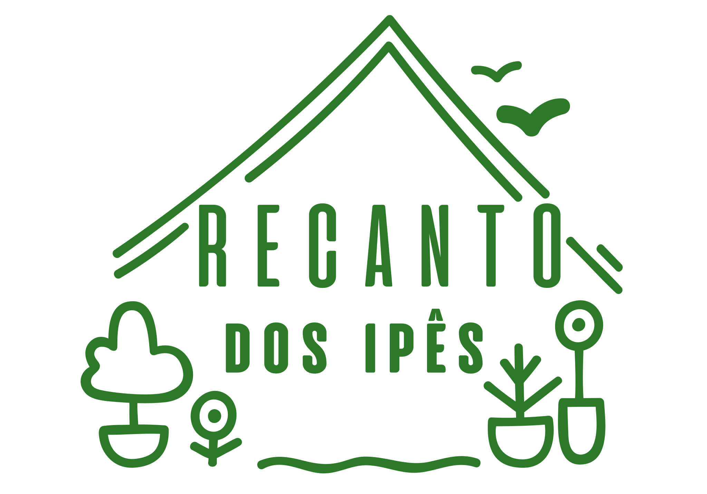
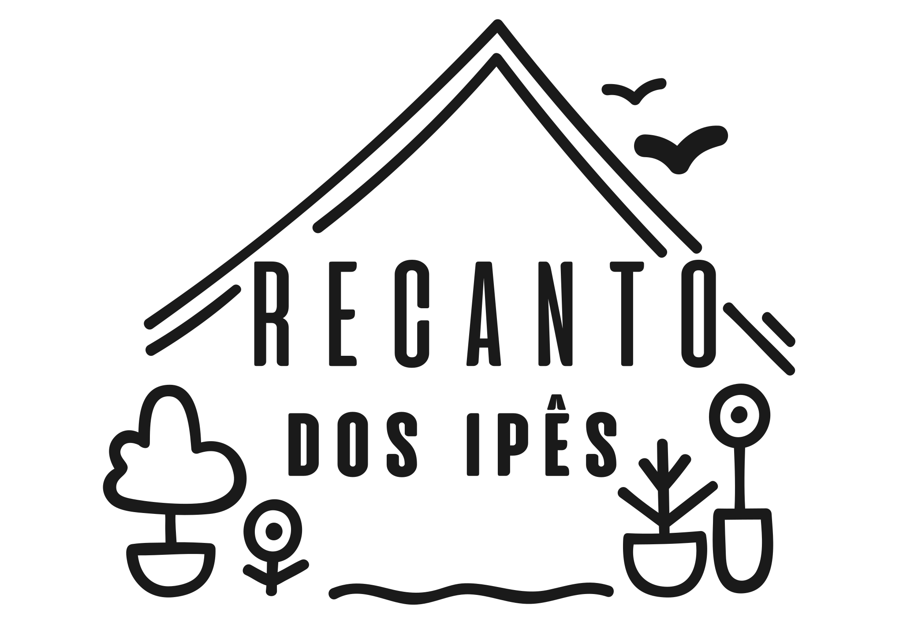
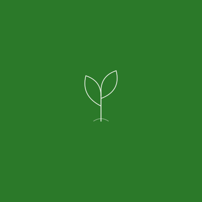
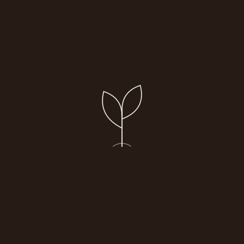
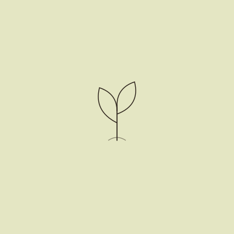

Recantos da Serra
Brand Identity Guide
Sítio Recanto dos Ipês
Diretrizes de identidade visual para uso consistente da marca em todos os canais.
Recantos da Serra
Brand Identity Guide
Diretrizes de identidade visual para uso consistente da marca em todos os canais.
01 — Logotipo
02 — Cores
Cor principal · logo · CTAs primários
Destaque · badges · elementos de energia
Backgrounds · cards · divisores suaves
Background principal · áreas de respiro
Atenção · promoções · CTAs secundários
Texto principal · fundos escuros · footer
03 — Tipografia
04 — Espaçamento
Manter espaço livre equivalente a ½ da altura do logo em todos os lados.
05 — Regras de Uso
06 — Tom de Voz
O Recanto dos Ipês é um lugar de acolhimento genuíno. A comunicação deve soar como um anfitrião caloroso — não como um hotel ou empresa. Natural, honesto, próximo.
07 — Arquivos
| Arquivo | Formato | Uso |
|---|---|---|
brand/logo-color.svg |
SVG vetorial (Adobe Illustrator) | Web, digital, escalável — uso principal colorido |
brand/logo-bw.svg |
SVG vetorial | Impressão P&B, bordado, documentos formais |
brand/Recanto dos Ipes - Logo.svg |
SVG vetorial (arquivo original) | Fonte original — não modificar |
brand/Sitio Recanto dos Ipes - Brand Presentation.html |
HTML | Este guia de identidade visual |
Logo Sitio Recanto dos Ipes.pdf |
Arquivo original + paleta Coolors |
08 — Sistema de Logo



Chips — Formato Compacto
Escuro
Claro
Os chips são versões simplificadas do logo para uso em espaços compactos. Use abaixo de 80px ou quando a fidelidade completa não é necessária.
09 — Diretrizes de Uso
O Sítio Recanto dos Ipês não possui variantes com tagline ou wordmark horizontal. O mark ilustrado é o único formato do logo — aplicado em diferentes versões de cor conforme o contexto.
10 — Arquivos para Plataformas
Favicons
favicons/sri-favicon-180.svg
favicons/sri-favicon-32.svg
favicons/sri-favicon-16.svg
Perfis Sociais

Verde
Dark
Sálviasocial/sri-social-verde.svg
social/sri-social-dark.svg
social/sri-social-sage.svg
Notas de Uso
O logo Sítio Recanto dos Ipês é fornecido como arquivo SVG vetorial. Para uso em plataformas que não suportam SVG, exporte para PNG na resolução necessária.